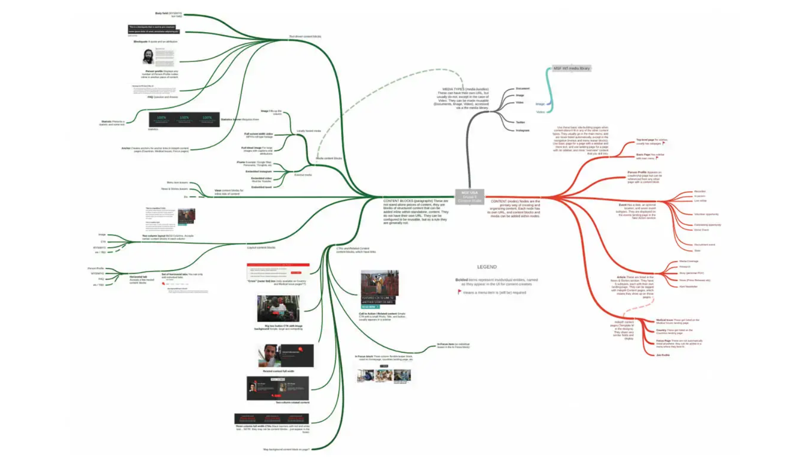

Making life easier for website content authors with a component-driven approach in Drupal

Content strategists and site builders alike will recognize the predictable problem of “CMS bloat” — like a Drupal website with three times the number of content types it needs, or a dozen taxonomy vocabularies that rarely get used.
At Seattle DrupalCon 2019, CivicActions’ Kev Walsh and Iris Ibekwe shared from their experience redesigning the website for Doctors Without Borders by creating elegant and flexible content models with smaller chunks of structured content.
Learn how a modular, component-driven approach can provide a better content authoring experience and a much less repetitive approach to site building, theming, and site maintenance.
“The sky is the limit and the client is having fun.” — Iris
Highlights
- 0:38 — How Doctors Without Borders uses their website to provide global aid
- 2:28 — Why we chose a component-driven approach for the Drupal 8 redesign
- 5:17 — How and why we created a lean, mean content model (watch out for scope creep!)
- 10:47 — Heads up, you’re going to get the content model wrong the first time (so stay lean, and build in feedback loops)
- 12:56 — Get your initial content model in front of users ASAP, and ask them to break it (fail fast!)
- 15:30 — Create diagrams of the content model to help product owners and stakeholders understand what you’ve designed
- 17:05 — How VX and UX can work together with developers to shape the site build
- 17:50 — How the component-driven model unleashes new site building freedoms
- 20:23 — See how one component can be reused in multiple ways
- 23:40 — How the component-driven approach opened new possibilities for the client
- 25:35 — Agile + component-driven content model = so happy together!
Resources
- Deck: Component-Driven Content Strategy for doctoswithoutborders.org
- Case Study: Doctors Without Borders
- Cognitive model of the new content structure
- Atomic Design Methodology
- Pattern Lab + Drupal
Connect with Iris!
Connect with Kev!